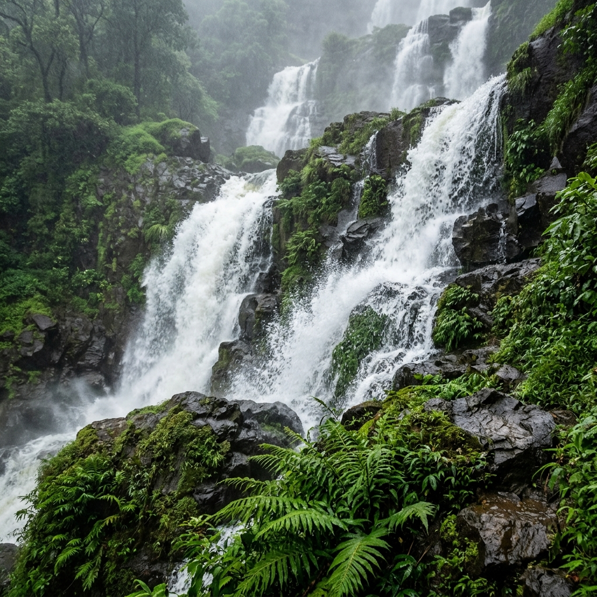
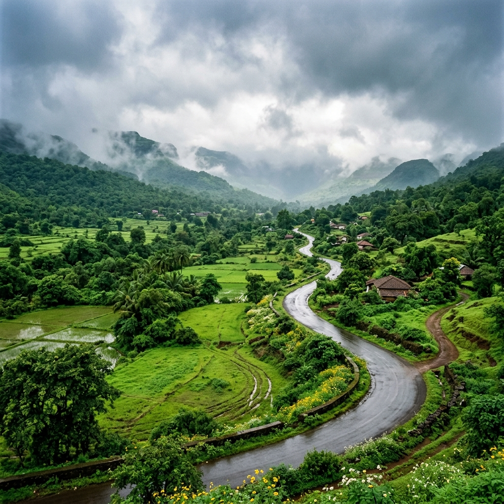
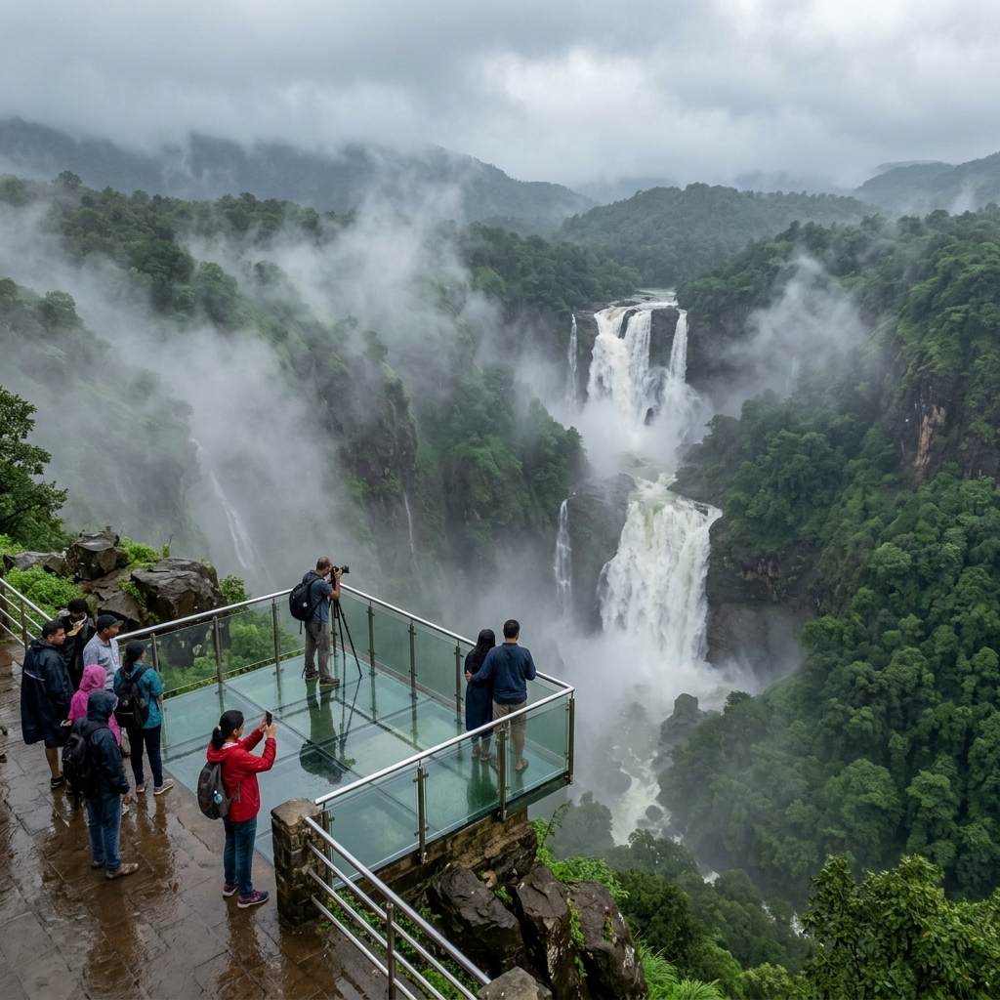
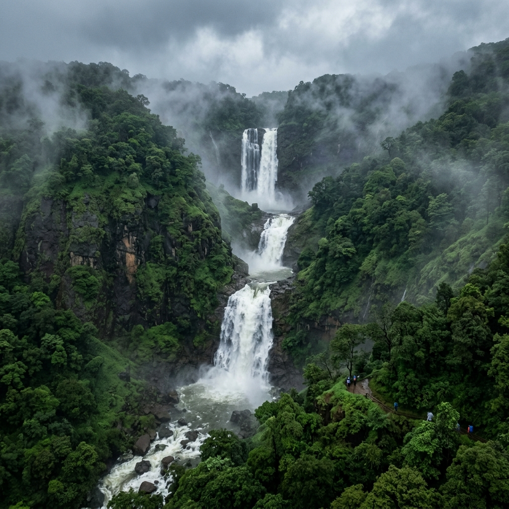

About Vajrai Waterfalls
Vajrai Waterfall is not just a waterfall - it feels like watching raw nature at full power. Known as one of the tallest waterfalls in India, the water drops in three massive tiers from a great height, creating a thunderous sound that you can hear even before you see it. During monsoon, the flow becomes intense and wild, and the mist rising from the valley adds a dramatic, almost cinematic feel to the entire place.
Raw Power
Three Massive Tiers
Cinematic Mist
Intense Monsoon Flow

Exact Location

The waterfall is located near Bhambavali village, around 25 km from Satara in the Western Ghats. It is surrounded by hills and valleys, making it a scenic and slightly remote destination. Reaching Vajrai feels like a journey into the deeper side of nature. As you leave the main highways and enter village roads, the surroundings become greener and quieter, adding a sense of adventure before you even reach the waterfall.
Bhambavali
Near Satara (~25 km)
Western Ghats
Scenic & Remote
What to See
Discover the unique highlights and landscape features of Vajrai Waterfalls.


Travel Guide
Comprehensive transport options to reach the Vajrai Waterfalls area.
Option 1: By Car (Best Option)
Traveling by car is the best way to reach Vajrai. From Mumbai, it takes around 6–7 hours, and from Pune, around 3–4 hours. Roads are good till Satara, and then you drive through smaller village roads to reach the base.
Direct Road ConnectionOption 2: By Train
The nearest railway station is Satara. From there, you need to hire a taxi or local vehicle to reach Bhambavali village and then the waterfall area. This takes about 1–1.5 hours from the station.
Nearest Station: SataraOption 3: By Bus
You can take a bus to Satara from Mumbai or Pune. From Satara, local buses or taxis are available to reach nearby villages, but hiring a private vehicle is more convenient for reaching the exact location.
Essential Information
Details regarding physical access, budget, and the main attractions.
Access / Walk
There is no major trek required. From the parking or village area, it's a short walk to reach viewpoints. However, to explore closer areas, you may need to walk through uneven paths, which adds a bit of adventure.
Budget & Costs
The trip is moderate in cost. Travel may cost around ₹800–2000 depending on your mode, and food around ₹300–500. Overall, it's affordable if planned well, especially in a group.
What to See
The highlight is the massive three-level waterfall dropping from a huge height, especially during peak monsoon when it looks extremely powerful.
Location & Coordinates
Near Bhambavali village, Satara, Maharashtra, India